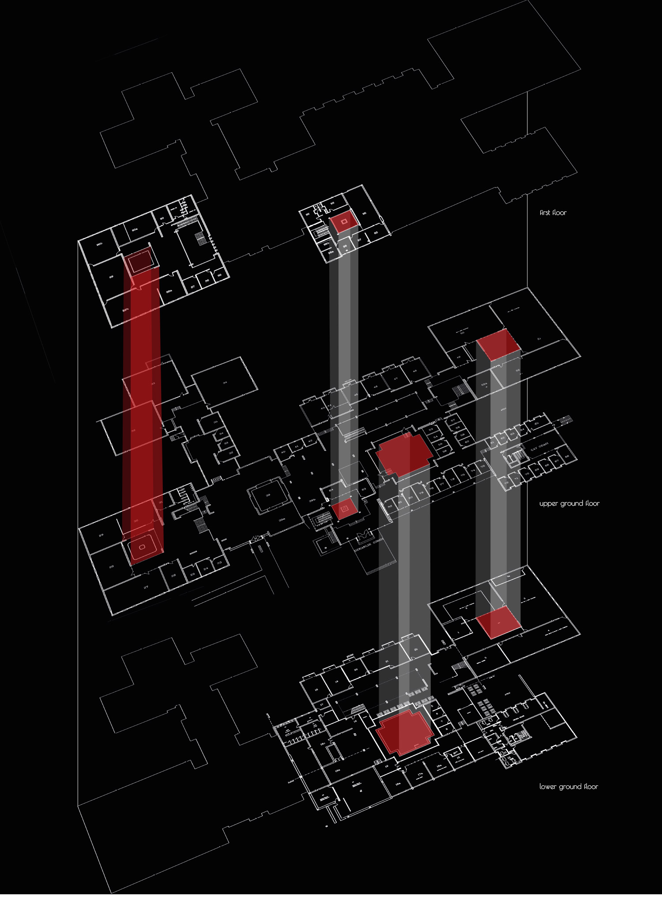
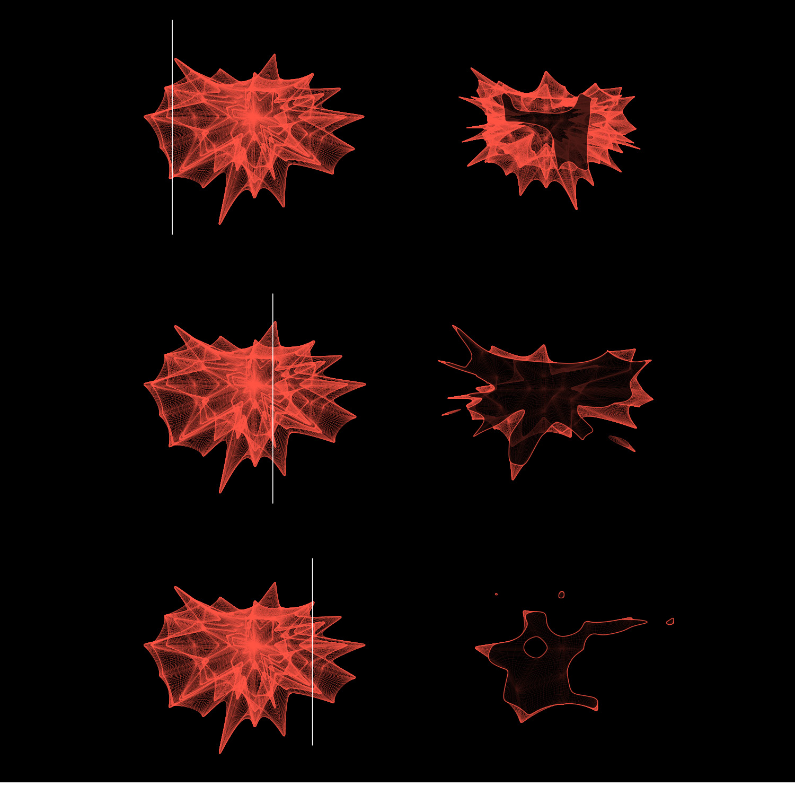
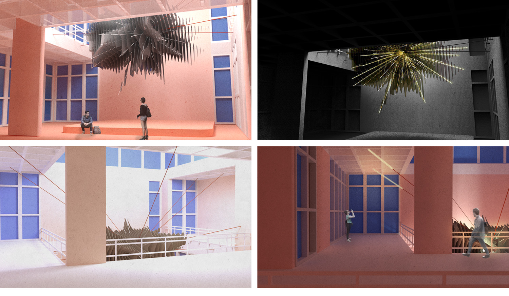

The Seed /rethinking Göbektaşı
| _university | METU, Turkey |
| _semester | BSc in Architecture, generative design studio |
| _year | 2017 |
| _location | METU Architecture Faculty, Ankara, Turkey |
| _author(s) | Işınsu Tazıcı, Orçun Yazıcı |
METU Faculty of Architecture building* is organized around open and closed courtyards which we call
"seeds of the building". These architectural spaces arrange the functions around and they also
become densely used important places. "The Seed" is a project which has its own identity formed by
the tension between natural and manmade factors contributing to the unique character of the courtyard.
While affecting and arranging its environment, The Seed is also affected by its surrounding. It is
designed to celebrate the vivid architectural space. Design idea is also an interpretation of "seed".
It starts from a sphere and it is shaped by various factors such as wind, sunlight and human activity
of the site.
*METU Faculty of Architecture building is awarded a grant by Getty Foundation through "Keeping It
Modern" initiative which focuses on the conservation of significant buildings of the 20th century.


